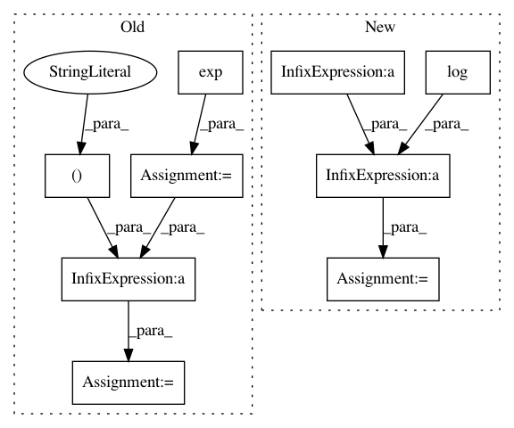

42dc18f2a13441eefdfceed905843a3d19b27072,pyro/distributions/one_two_matching.py,OneTwoMatching,log_partition_function,#OneTwoMatching#,101
Before Change
finfo = torch.finfo(self.logits.dtype)
shift = self.logits.data.max(1, True).values
shift.clamp_(min=finfo.min, max=finfo.max)
p = (self.logits - shift).exp().clamp(min=finfo.tiny ** 0.5)
d = 2 / p.sum(0)
for _ in range(self.bp_iters):
s = 1 / (p @ d)
d = 2 / (s @ p)
b = s[:, None] * d * p
// Evaluate the Bethe free energy, adapting [4] Eqn 4 to one-two
// matchings.
b = b.clamp(min=finfo.tiny ** 0.5)
After Change
logits = self.logits - shift
d = logits.logsumexp(0) - math.log(2)
for _ in range(self.bp_iters):
s = (logits - d).logsumexp(-1, True)
d = (logits - s).logsumexp(0) - math.log(2)
b = (logits - (d + s)).exp()
def log(x):
return x.clamp(min=finfo.tiny).log()
In pattern: SUPERPATTERN
Frequency: 3
Non-data size: 9
Instances
Project Name: uber/pyro
Commit Name: 42dc18f2a13441eefdfceed905843a3d19b27072
Time: 2020-12-07
Author: fritz.obermeyer@gmail.com
File Name: pyro/distributions/one_two_matching.py
Class Name: OneTwoMatching
Method Name: log_partition_function
Project Name: rflamary/POT
Commit Name: cfdbbd21642c6082164b84db78c2ead07499a113
Time: 2019-08-28
Author: hicham.janati@inria.fr
File Name: test/test_unbalanced.py
Class Name:
Method Name: test_unbalanced_convergence
Project Name: rflamary/POT
Commit Name: 5c0ed104b2890c609bdadfe0fcb0e836ba7a6ef1
Time: 2019-07-22
Author: hicham.janati@inria.fr
File Name: test/test_unbalanced.py
Class Name:
Method Name: test_unbalanced_convergence